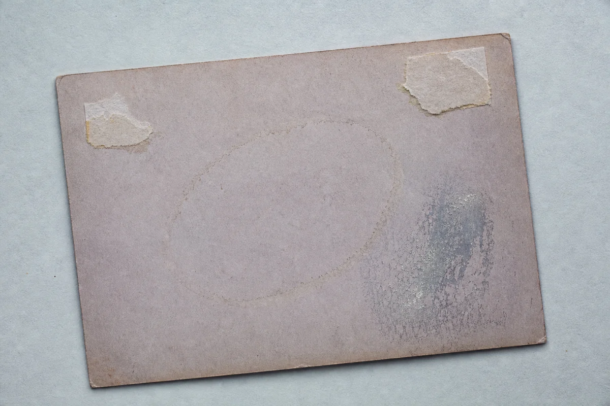
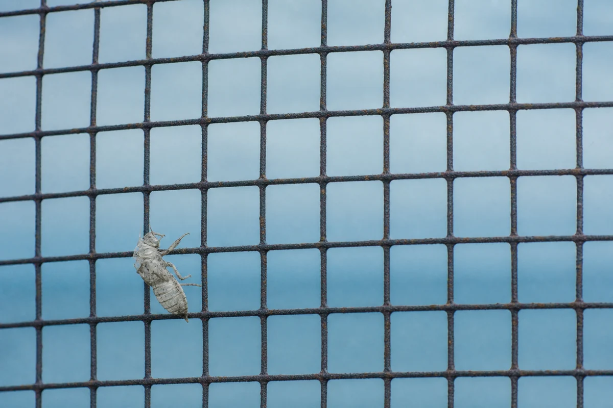
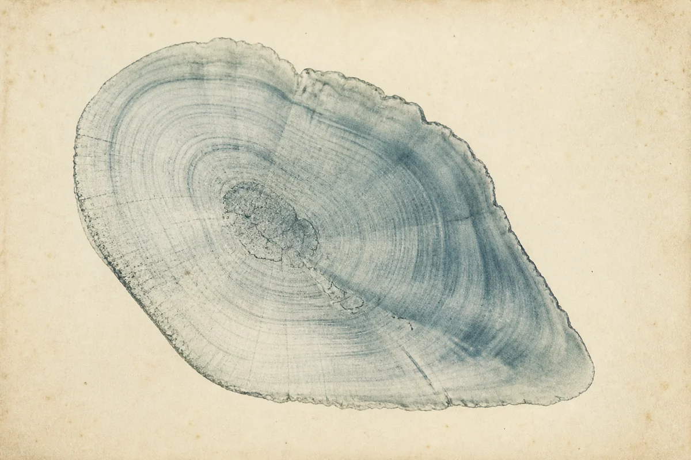
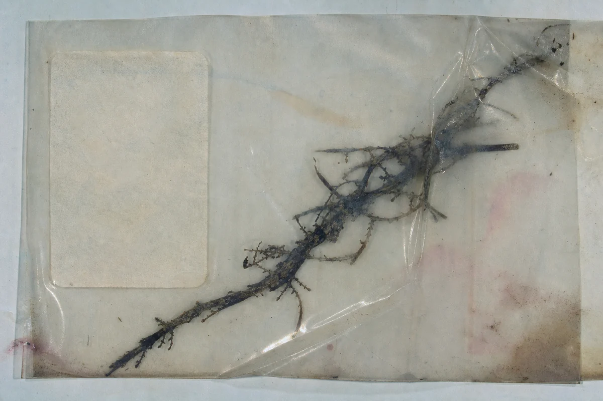

Dream Window Return ⏎
Resizable, Movable Windows.

fig. 1 :: verso

fig. 2 :: tenancy
; “ ”
sending an e-mail: the other day
Polyvinyl forget. Squash

fig. 3 :: increments
dies fast opening
waiting for them to get back
of another
short
it’s not-any season
a p(recip[i)ce] at the roundabout
tangled, antediluvian

fig. 4 :: unaccessioned
when uláyhon nga again
wheren’t.
a new